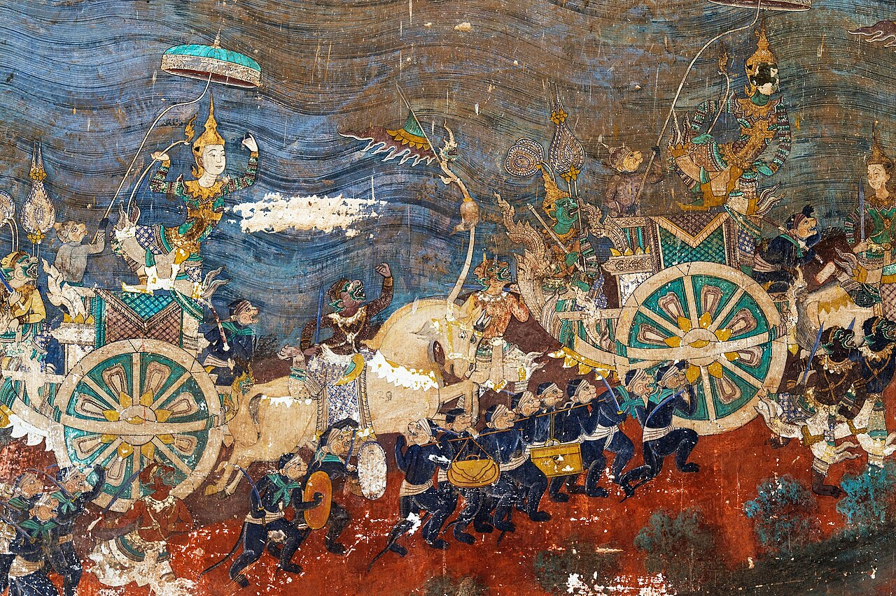

រាមកេរ្តិ៍ — មហាកំណាព្យជាតិ
រាមាយណៈរបស់ខ្មែរ — ត្បាញប្រាជ្ញាព្រះពុទ្ធសាសនាចូលក្នុងរឿងព្រះរាម និងនាងសីតា។
មហាកំណាព្យជាតិ
បន្ទាប់ពីការដួលរលំនៃអង្គរ វប្បធម៌ខ្មែរមិនបានបាត់បង់ទេ — វាបានផ្លាស់ប្តូរទម្រង់។ ព្រះពុទ្ធសាសនាថេរវាទ បានក្លាយជាសាសនាសំខាន់ ហើយអក្សរសិល្ប៍បានរីកចម្រើន។
នៅសតវត្សទី ១៦ – ១៧ មហាកំណាព្យជាតិរបស់ខ្មែរ — រាមកេរ្តិ៍ — ត្រូវបាននិពន្ធ។ វាជារាមាយណៈរបស់ខ្មែរ ប៉ុន្តែត្រូវបានត្បាញបញ្ចូលជាមួយប្រាជ្ញាព្រះពុទ្ធសាសនា និងរសជាតិខ្មែរផ្ទាល់។
រឿងរបស់ខ្មែរ
រាមកេរ្តិ៍ និទានរឿងព្រះរាម នាងសីតា និងយក្សរាពណ៍ — ប៉ុន្តែតាមរបៀបខ្មែរ។ តួអង្គ ឈុតឆាក និងសារលាក់កំបាំង ត្រូវបានកែប្រែឲ្យសមស្របនឹងជំនឿ និងតម្លៃរបស់ខ្មែរ។
រឿងនេះបានហូរចូលទៅក្នុងគ្រប់ទម្រង់សិល្បៈ៖ របាំព្រះរាជទ្រព្យ ល្ខោនស្រមោលស្បែកធំ ល្ខោនខោល និងផ្ទាំងគំនូរព្រះបរមរាជវាំង។ រាមកេរ្តិ៍ ជារឿងរបស់ខ្មែរ និទានដោយសំឡេងរបស់ខ្មែរផ្ទាល់។
អក្សរសិល្ប៍រីកចម្រើន
សម័យកាលនេះក៏បានបង្កើតស្នាដៃសំខាន់ៗផ្សេងទៀតដែរ៖ «ល្បើកអង្គរវត្ត» (ដើមសតវត្សទី ១៧) ដែលរៀបរាប់អំពីប្រាសាទ និងចម្លាក់របស់វា និងស្នាដៃរបស់ព្រះបាទអង្គឌួង (១៨៤១–១៨៦០) ដែលជាស្តេចកវីដ៏ល្បីល្បាញ។
អក្សរសិល្ប៍ខ្មែរ បានបន្តរស់នៅ ដកដង្ហើម និងវិវត្ត — ដូចប្រជាជាតិខ្មែរដែរ។